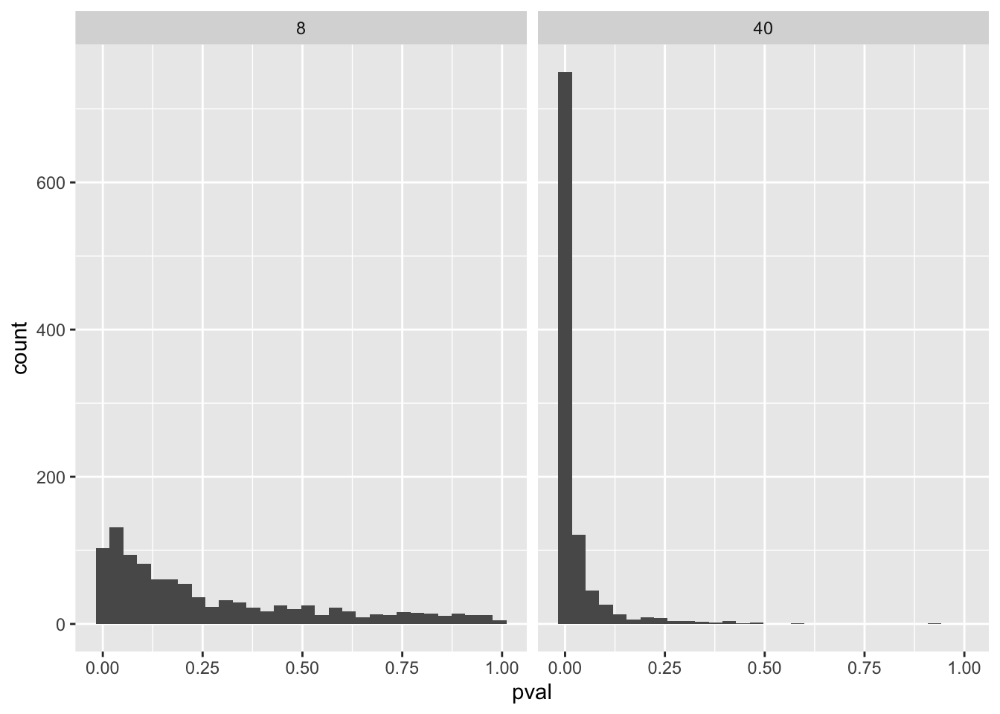

Call:
lm(formula = y ~ 1, data = samp2)
Residuals:
Min 1Q Median 3Q Max
-5.6557 -2.2883 0.2636 2.2549 6.4212
Coefficients:
Estimate Std. Error t value Pr(>|t|)
(Intercept) 1.5642 0.4774 3.276 0.00221 **
---
Signif. codes: 0 '***' 0.001 '**' 0.01 '*' 0.05 '.' 0.1 ' ' 1
Residual standard error: 3.019 on 39 degrees of freedomArbeidskrav 3 - statistisk inferens
Tolkning
Oppgave 3.1 - Estimat, SE, t-verdi og p-verdi
Estimatet presenterer gjenomsnittsverdien av en gitt variabel i utvalget vårt. For “m1” blir denne verdien 1.840, mens den i “m2” blir 1.564. Her blir estimatet ulikt, ettersom vi benytter oss av to ulike utvalg. “m2” består av 40 prøver, mens “m1” på sin side består av 8.
SE står for Standard Error (norsk: standardfeilen), og henviser til feilmarginen av et estimat. For utvalget i “m1” er SE 1.251, noe som betyr at vi kan forvente å få verdier som varierer 1.251 fra estimatet, altså gjennomsnittet. Dersom utvalget er større, påvirker dette ofte SE til å bli lavere. Dette kommer av at vi gjennom et større utvalg tilegner oss mer informasjon om utvalget. SE blir derfor mer nøyaktig. I “m2” har vi en større populasjon enn i “m1”, og vi får derfor et mer pålitelig estimat. For “m2” er SE 0.4774.
T-verdi er et mål på hvor mye en estimert verdi varierer fra en nullhypotese. I vårt tilfelle forteller t-verdien hvor langt estimatet (gjennomsnittet) vårt er fra null. For “m1” er denne verdien 1.470, mens den for “m2” er 3.276. T-verdien regnes ut ved “estimat / SE”. En lav SE er gjerne en indikasjon på høyere t-verdi.
P-verdien viser hvor sannsynlig resultatene våre er, gitt en nullhypotese. Lav p-verdi viser at det er lav sannsynlighet for at resultatene man har fått er tilfeldige. Dersom utvalgsstørrelsen er stor vil estimatene bli mer nøyaktige, og det kan føre til lavere p-verdier ettersom variasjonen minsker. Dersom utvalgsstørrelsen er mindre, følger en større usikkerhet rundt estimatene og p-verdien vil bli høyere. Dersom p-verdiene er høy er sannsynligheten høyere for at resultatene kommer av en tilfeldighet. For “m1” er p-verdien 0.185, mens den for “m2” er 0.00221. Ofte brukes p < 0.05 som et signifikansnivå, der verdier < 0.05 regnes som siginifikante. I dette tilfellet er det kun “m2” som er signifikant forskjellig fra null, noe som blant annet påvirkes av utvalgsstørrelsen.
Oppgave 3.2 - Resultatdiskusjon
De to studiene gir oss ulike resultater, og det er flere grunner som har skyld i dette. En viktig grunn til ulike resultatene er den ulike størrelsen på de to utvalgene. Der “m1” har et utvalg på n = 8, har m2 et utvalg på n = 40. Større utvalg gir som sagt mer informasjon om populasjonen. Videre gir det mulighet til å beregne mer nøyaktige estimater av gjennomsnittet. Dette vises i at standardfeilen blir mer nøyaktig (1.251 mot 0.4774). Større utvalg gir lavere SE, og vi kan tolke det til at resultatene ligger nærmere estimatet og er mindre spredt enn hva et mindre utvalg ville gitt. Dette bekreftes av resultatene til “m1” og “m2”.
Som vi ser av resultatene ga “m1” en høyere p-verdi enn hva “m2” gjorde. Siden p-verdi er en måling på hvor sannsynlig det er at resultatene våre er tilfeldig, ser vi at denne sannsynligheten er høyere hos “m1” (0.185), enn hos “m2” (0.00221). Ved små utvalg er det lettere at resultatene blir mer “tilfeldige”, ettersom at større utvalg i større grad kan brukes til å “generalisere”. Dermed spiller utvalgsstørrelsen oså inn på p-verdi og sannsynligheten for tilfeldige resultater.
Oppgave 3.3 - Skravert område i t-fordelingen
I t-fordelingen ser vi skraverte områder ved nedre og øvre hale. Disse områdene har flere funksjoner, blant disse å forstå fordelingen av t-verdier dersom nullhypotesen var sann. De skraverte områdene viser derfor sannsynligheten for å observere verdier høyere enn de t-verdiene vi fikk i våre data. Dermed brukes disse områdene også til å lese av en p-verdi, som vi ønsker at skal være så lav som mulig. I dette tilfellet er områdene < -1.470 og området > 1.470 skyggelagt, siden fordelingen bruker resultatene fra “m1”. Dersom fordelingen var basert på reusltater fra “m2” ville disse områdene vært mindre. Dette skyldes den høyere t-verdien til “m2”.
Tolkning
Oppgave 3.4 - Standardavvik og gjennomsnitt av SE
Standardavvik (n = 8): 1.070843 Standardavvik (n = 40): 0.4838475 Gjennomsnitt av SE (n = 8): 1.021374 Gjennomsnitt av SE (n = 40): 0.4696954 Som vist over ga standardavviket av estimatvariabelen og gjenomsnittet av variablene for begge utvalgene relativt like resultater innenfor hver studie. Standardavviket for estimatene viser hvor mye de beregnede gjennomsnittene fra de ulike studiene varierer fra hverandre. For utvalget n=8 var dette 1.038, mens det for n=40 var 0.4728. Når det kommer til gjennomsnittet av SE for de to studiene, hadde n=8 et gjennomsnitt på 0.4838, mens n=40 fikk et gjennomsnitt på 0.4728. Som vi ser av tallene, er SE og gjennomsnittet av SE ganske like. Dette kommer av at den gjennomsnittlige standardfeilen er et estimat av spredningen i utvalgsfordelingen. Utvalgsfordelingen er på sin side alle beregnede gjennomsnitt.
I denne koden har vi simulert 1000 studier, som er en stor mengde studier. Når man kommer opp i en såpass stor mengde har variablene en tendens til å legge seg mot en stabil normalfordeling, dette til tross for at det kan være en stor variasjon enkeltvis.
Oppgave 3.5 - Histogram av p-verdi
The downloaded binary packages are in
/var/folders/zv/mr0s9rtx3ps_mncwm62r3f0c0000gn/T//Rtmp4QeOXl/downloaded_packages
# A tibble: 2 × 2
n sig_results
<dbl> <dbl>
1 8 0.227
2 40 0.865
One-sample t test power calculation
n = 40
d = 0.5
sig.level = 0.05
power = 0.8693981
alternative = two.sidedEt histogram er en grafisk figur som viser fordelingen av ulike verdier. I vårt tilfelle har vi valgt å se på p-verdien fra studiene med utvalgsstørrelse på n=8 og n=40. Histogrammene gir uttrykk for hvordan utvalgsstørrelsen påvirker statistisk kraft. For å lese av hvor stor statistisk kraft studiene har, må vi se på fordelingen av p-verdiene. Dersom studiene større rad av verdier som ligger mot 0.0 (mot venstre), er det en indikasjon på god statistisk kraft. Med en større utvalgsstørrelse øker sannsynligheten for at p-verdiene viser til signifikant effekt. Dersom studiene har et lite utvalg, vil flere av p-verdiene ligge mot 1 (mot høyre). Dette er tilfellet for studien med et utvalg å n=8, der fordelingen ikke er like konsentert mot venstre som hva den er ved en større utvalgsstørrelse. Denne studien har derfor lavere statistisk kraft enn studien med større utvalg. Slik ser vi hvordan utvalgsstørrelsen påvirker den statistiske kraften.
Oppgave 3.6 - Antall studier med statistisk signifikans
Antall signifikante studier for utvalgsstørrelse 8: 227 Antall signifikante studier for utvalgsstørrelse 40: 865 I denne oppgaven vil vi bruke 0.05 (5%) som et terskelnivå som signaliserer statistisk signifikant effekt. Betydningen av dette er at vi skiller ut alle studiene som har en p-verdi ≤ 0.05, som gjør at vi sitter igjen med en rekke studier som har signifikante resultater. Gjør vi dette for utvalgsstørelsen på 8 sitter vi igjen med 227 studier, og 865 studier for utvalgsstørrelsen på 40. Hadde vi satt signifikansnivået til å være 0.01 (1%), ville antallet vært mindre fordi vi setter strengere krav til statistisk signifikans. Da ville antallet henholdsvis vært 74 for n=8 og 666 for n=40.
Oppgave 3.7 - Kraften til t-test
Kraften for prøvestørrelse 8 er 0.232077 Kraften for prøvestørrelse 40 er 0.8693981 Kraften sier noe om evnen til å oppdage en mulig effekt. Denne kraften påvirkes av flere faktorer. En av faktorene er prøvestørrelsene. Kraften for prøvestørrelse 8 var 0.2320. For prøvestørrelse 40 var den 0.8693, som er betraktelig høyere enn for prøvestørrelse 8. Dermed ser man hvordan prøvestørrelsen påvirker kraften, altså sannsynligheten for å oppdage en mulig effekt dersom den eksisterer. Man kan dermed også si at større prøvestørrelser har høyere statistisk kraft enn hva mindre prøvestørrelser har. Dette kan komme av at vi har mer informasjon om populasjonen, og derfor muligheten til å beregne presise estimater.
Videre er siginifikansnivået (alfa) satt til å være 0.05, ettersom at det er et ofte brukt nivå i statistiske tester. Hadde dette nivået vært lavere, f.eks 0.01, ville kravet til høyere statistisk kraft økt, og vi får fått endringer i kraften. Dersom vi setter signifikansnivået til å være 0.01, får prøvestørrelse 8 en kraft på 0.0716, mens prøvestørrelse 40 får 0.6741. På denne måten ser vi at kravet øker, og at prøvestørrelse 40 forstatt har større kraft sammenlignet med prøvestørrelse 8. Bakgrunnen for dette er faktorene nevnt over.
Oppgave 3.8 - Antallet falske positive?
[1] 93Med et signifikansnivå på 5% ville 93 studier gitt et “falskt positivt” reusltat dersom man gjorde mange gjentatte studier. Dette finner vi ut ved å se på p-verdiene til de inkluderte studiene. Siden vi satte en gjennsomnittseffekt på null, og et signifikansnivå på 0.05, betyr det at vi aksepterer er “feilmargin” på 5%. I praksis betyr det at vi med en effekt på null bruker p-verdien til å vurdere hvor sannsynlig det er at vi observerer en effekt basert på tilfeldigheter. Med en effekt på null forventes det at p-verdiene fordeler seg jevnt mellom 0 og 1. Dersom vi vet at det ikke er effekt vil den andelen som får en p-verdi mellom 0 og 1 kvalifisere som falske positive. I dette tilfellet vil det som nevnt resultere i 93 falske positive dersom man gjorde mange gjentatte studier.